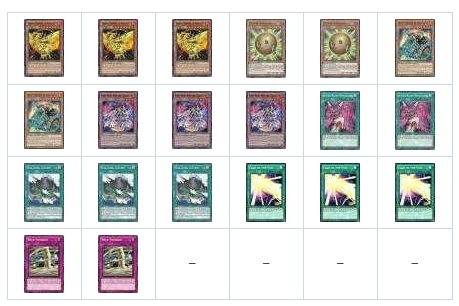

Help
Set you deck size and your hand size and if you have the skill restart. After that you need to select how many card you have in your deck that you want at least one in your starting hand.
Example 1:
Lets say you have this Phoenix deck:

3x Sacred Phoenix of Nephthys
2x Sphere Kuriboh
2x Heavy Knight of the Flame
3x Fire King Avatar Yaksha
2x Super Rush Headlong
3x Fire King Island
3x Card of the Soul
2x Wild Tornado
You need your starting hand to have a Phoenix (or a way to get one) and a card to send it to the graveyard. This means that you can have either a Phoenix or a Card of the Soul and a Fire King Island or a Fire King Avatar Yaksha. So you have 6 Cards that can get a Phoenix in your hand and 6 Cards to get it to the graveyard.
1. Set you Deck Size to 20 and Hand Size to 4.
2. Set your Combo Card 1 to 6 (thats how many cards acts like a Phoenix).
3. Click the button to add another card.
4. Set your Combo Card 2 to 6 (thats how many cards can send your Phoenix to the graveyard).
5. Click Calculate.
It will show that you have 60.12% chance to get at least one Phoenix and one way to send it to the graveyard.
You can also check you chances with Restart Skill by clicking the Restart? checkbox.
To compare with Duel, standby Skill you can change your Hand Size to 5.
Restart: 84.10%
Duel, standby: 74.54%